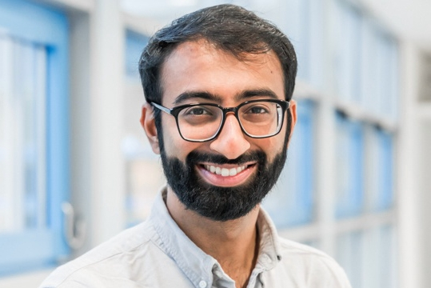

I graduated from the University of Maryland with a major in Mechanical Engineering (2017). I participated in undergraduate research with Dr. Siddartha Das in the SMIELS lab. I was also an active member of various groups on campus such as ASME, Terrapin Hackers, and UMD Hyperloop.
Over the last two years, I have been working for Festo as a product development engineer, focusing in microfluidics and laboratory automation. I helped create a new team and facility for rapid development cycles at the company. I spend most of my time designing and developing lab automation components and fluid dispensing systems. My interests range from microfluidics, soft robotics, MEMS, and precision mechanical design.
In my free time I enjoy exploring the city, visiting muesums, taking various MOOCs via various online platforms, and hacking together control systems with Arduino and my 3D printer.
